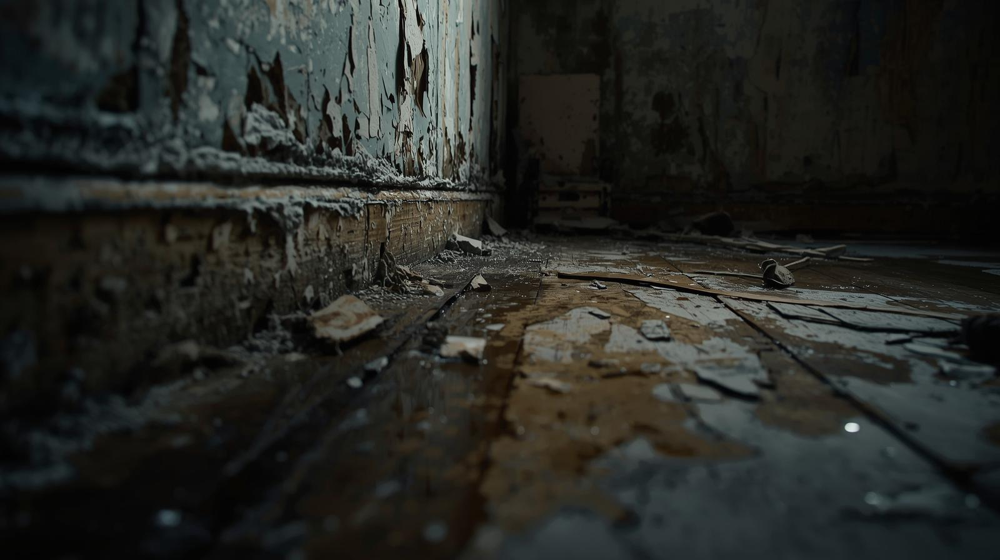
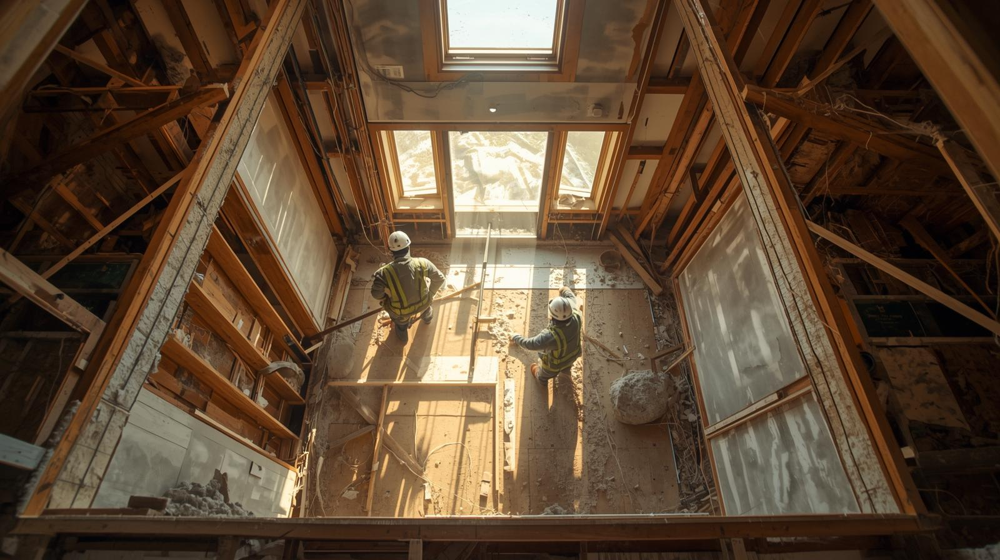
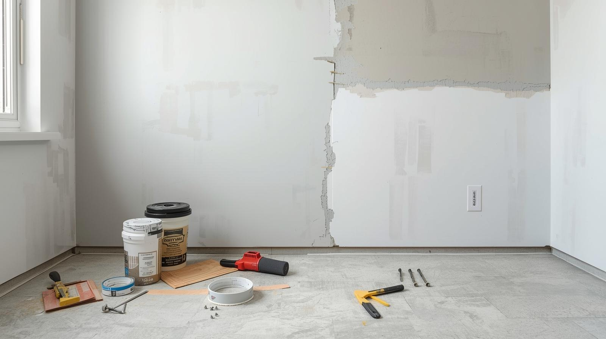
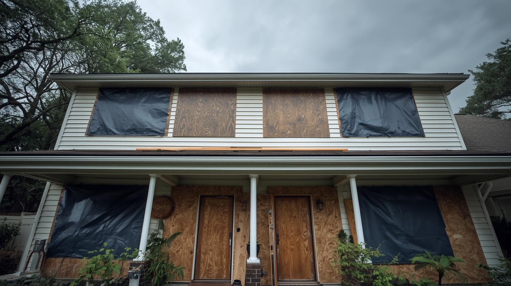
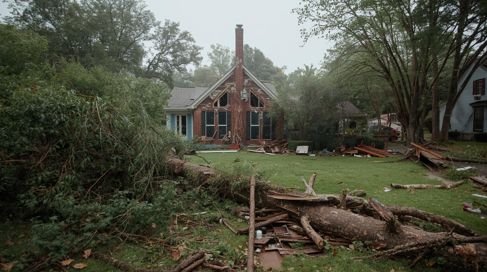
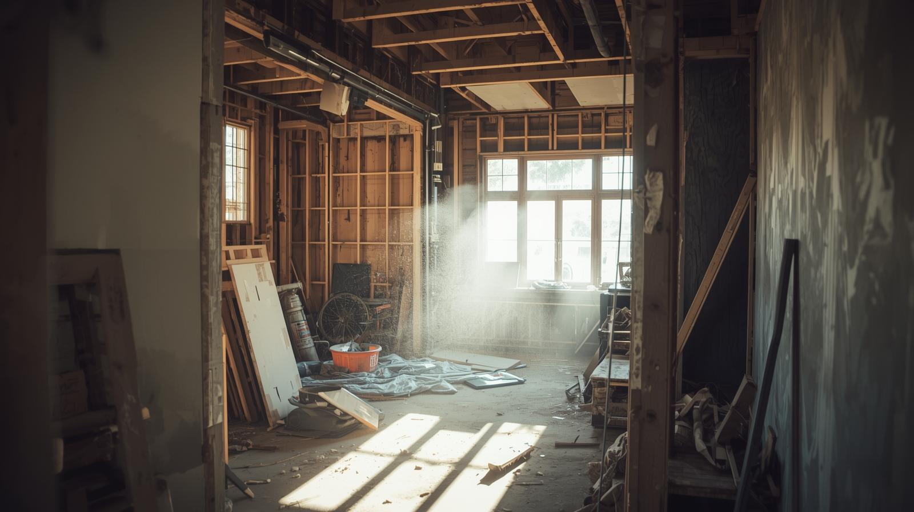

At Longitude Restored LLC, we know that every property and every disaster is different. That’s why we offer a
full range of restoration, repair, and construction services tailored to the unique needs of Southwest
Florida homeowners and businesses. From emergency water remediation to long-term rebuilding, our skilled
team provides the expertise, equipment, and dedication needed to restore comfort, safety, and peace of mind.
Whether you’re facing storm damage, water intrusion, or simply ready to update and strengthen your property,
we’re here to help. Explore our core services below to see how we can protect your investment, restore your
space, and prepare your property for the future.
When water invades your home or business, fast action makes all the difference. At Longitude
Restored LLC, we provide comprehensive water remediation services designed to stop damage in its
tracks and restore your property quickly and safely. From flood damage cleanup after heavy
storms to water damage repair caused by burst pipes or appliance leaks, our team has the
experience and equipment to handle it all.
Our process begins with emergency water removal to prevent further damage and reduce the risk of
mold growth. We then use advanced drying and dehumidification techniques to protect your
structure and belongings. Whether you’re dealing with a small leak or a major flood damage
event, our goal is to restore your space to pre-loss condition with as little disruption as
possible.
Serving homeowners and businesses across Southwest Florida, we understand the urgency of water damage. Our licensed and insured team responds quickly to minimize loss, prevent long-term issues, and guide you through the restoration process every step of the way.
With a focus on safety, efficiency, and compliance, our demolition and removal services give you a clean foundation to start fresh—whether rebuilding after a storm or upgrading an outdated structure.
When storm damage or outdated structures make safe use of your property impossible, professional
demolition is often the first step toward rebuilding. Longitude Restored LLC provides safe,
efficient demolition and debris removal services to clear the way for your next phase of
construction. Whether you need a partial tear-down after localized damage or a full property
demolition, our team follows strict safety standards to ensure the job is done right.
We handle everything from structural assessments to site preparation, carefully dismantling
damaged or unstable areas while protecting the parts of your property that remain intact. Once
the demolition is complete, our crew manages debris removal and cleanup so your site is fully
prepared for rebuilding.
Damaged drywall can compromise the look and feel of your home or business, especially after water
damage or storm events. At Longitude Restored LLC, we provide professional drywall installation
and repair services to restore interiors to like-new condition. Whether you need a small patch,
large-scale repair, or a full wall replacement, our skilled team ensures a smooth finish that
blends seamlessly with the surrounding surfaces.
We handle both residential and commercial drywall projects, using high-quality materials and
proven techniques to deliver lasting results. From repairing cracks and holes to replacing
drywall damaged by water or mold, our goal is to restore strength, safety, and appearance to
your walls.
With attention to detail and a commitment to craftsmanship, we help property owners across Southwest Florida restore comfort and value to their interiors.
With our storm preparation services, you gain peace of mind knowing your property is better protected when severe weather threatens.
The best way to protect your property from storm damage is to prepare before disaster strikes.
Longitude Restored LLC provides proactive storm preparedness services designed to safeguard
homes and businesses across Southwest Florida. By identifying vulnerabilities and reinforcing
critical areas, we help you minimize potential damage from hurricanes, tropical storms, and
severe weather.
Our team offers tailored solutions based on your property’s needs, from installing protective
coverings to securing outdoor features. We also provide expert guidance on emergency planning so
you can face incoming storms with greater confidence.
In the aftermath of a storm or demolition, clearing debris quickly and safely is essential to
restoring your property to usable condition. Longitude Restored LLC provides full property
clean-up services for residential and commercial sites across Venice, North Port, Port
Charlotte, and the surrounding Southwest Florida communities.
Our team removes storm debris, damaged materials, and hazardous waste with efficiency and care,
ensuring your property is safe, accessible, and ready for rebuilding. We handle everything from
small-scale yard clean-up to large site clearings, always maintaining strict safety and disposal
standards.
By restoring order after chaos, our clean-up services provide a clean slate for rebuilding and peace of mind for property owners.
With our trusted construction team, you’ll gain a partner dedicated not just to rebuilding, but to enhancing the value, safety, and comfort of your property.
Recovery is only the beginning — many property owners also want to restore, improve, or upgrade
before repairs are needed. Longitude Restored LLC offers reliable general construction services
to help you rebuild stronger and better. From small repairs to complete renovations, our
experienced crew delivers quality workmanship and long-lasting results.
We work with both homeowners and businesses throughout Southwest Florida, providing a wide range
of construction services tailored to your needs. Whether you’re looking to restore storm damage,
modernize outdated spaces, or add protective upgrades for future resilience, we’ve got you
covered.
Every storm leaves a different impact—and every recovery should be handled uniquely. At Longitude Restored LLC, we customize our restoration process for each property, treating your home or business with urgency, expertise, and care. From water remediation to demolition, storm cleanup, and drywall repair, our skilled team ensures quality results. Trusted throughout Venice, North Port, Port Charlotte, and Englewood, we’re here to restore safety and peace of mind from cleanup through complete reconstruction.